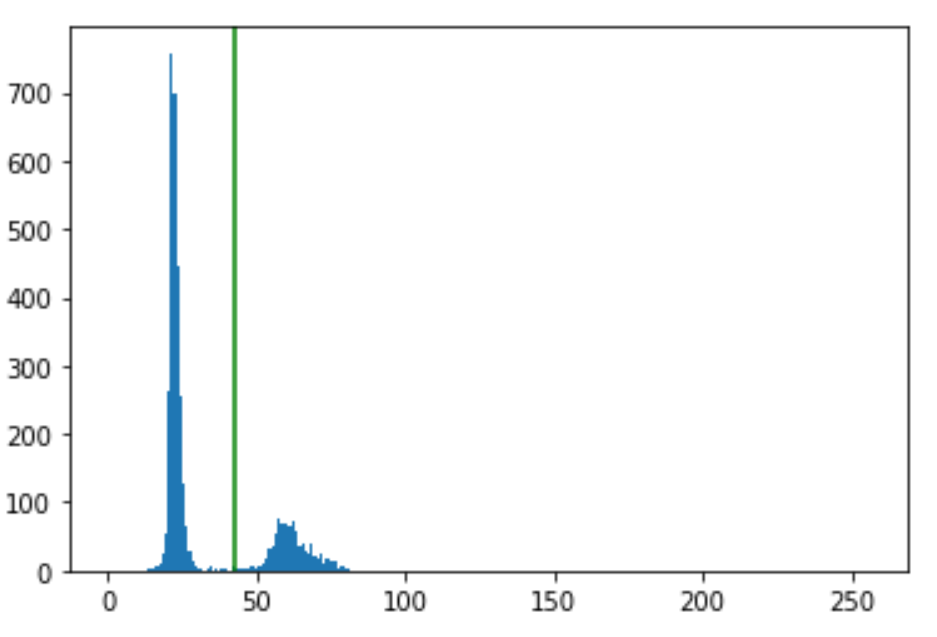
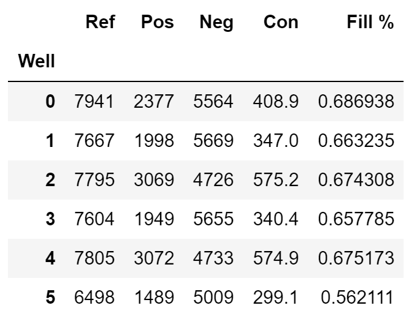

One of the key steps in dPCR is determining the positive and negative partitions from the brightness fluorescence. To do this, the partitions need to be found and then the brightnesses thresholded into two groups. These counts can be used to determine concentration of targeted DNA in the sample.
Brainstorming
There were several methods that I considered using for the processor. Finding the maxima and image segmentation were the initial ideas, but the maxima method did not filter out dust, and the segmentation method was too slow to be useful. I tested the methods first in ImageJ and then moved to Jupyter to test the OpenCV functions.
Current Method
I chose a variation of the image segmentation method for the result processor. Originally, the program was using watershed segmentation to find the partitions, then thresholding and finding the contours. This worked very well, but the brightness measurment was slow because every contour was creating a mask of the image. Changing this method to taking a slice of the image using a bounding rectangle of each contour drastically increased the speed.


Results
The results of the algorithm are very accurate. The algorithm does not consider dust and is able to cut out unfilled partitions and noise well. Automatic thresholding seems to work when the partitions are roughly split into two brightness groups. The results are output as csv files using Pandas. Part of what helps the results is taking the brightness gradient from the LED to normalize the result images. The imaging module in the instrument does not have a flat brightness field, causing some areas to be repeatively brighter or darker. Normalizing the result images to this brightness gradient to create a "flat field" drastically improves the results.
 Future plans
There are a few different avenues I want to consider.
- Change from python to C++
- Rexamining the maxima method using C++
- Removing non-randomness from the image
Overall I am happy with the progress of the project and am excited to see what the outcome will be.